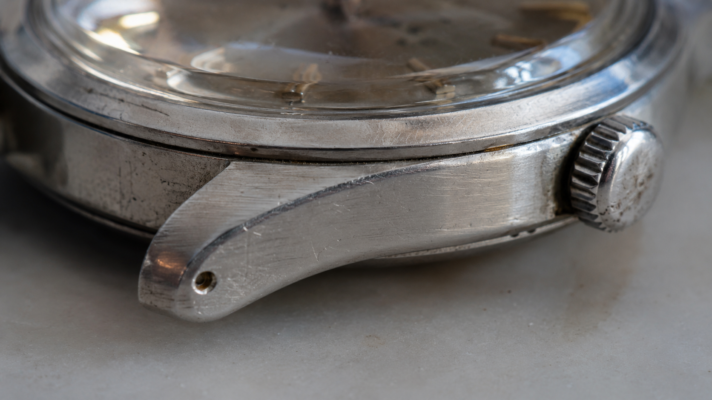

← BACK TO DOSSIERS LIST
CALIBRATION CASE FILE // TREND: FIXING THE CGI METAL REFLECTIONS IN AI PRODUCT RENDERS
Forensic Realism Study of a Weathered Steel Watch Case: Building Camera-Grade Material Authenticity
DATE: 2026-07-24
STATUS: EVIDENCE_DETECTION
ENGINE: CHATGPT DALL-E 3

SPECIMEN IMAGE #16:9 - CLEAN OPTICS
Many AI-generated product images fall into the same visual trap: spotless materials, exaggerated reflections, and repetitive luxury aesthetics. A weathered steel watch case offers a useful counterexample because its realism depends less on detail quantity and more on how wear, light interaction, and material aging behave under observation. Instead of treating steel as a flawless object, camera-grade realism begins by acknowledging the physical evidence left behind by time and use.
In the calibration study below, we break the subject down through five reality layers: Subject, Environment, Physics, Time, and Camera. Each layer contributes information that viewers unconsciously associate with authenticity. Yet the most overlooked variable is not the material itself. The true differentiator emerges through language-level substitutions hidden inside the calibration console. The lexicon shifts at the end of the dossier reveal why some prompts generate believable photographs while others default to synthetic visual stereotypes.
Lexicon shifts function as forensic calibration tools. Replacing phrases such as "perfect metal surface" with descriptions of accumulated micro-scratches changes the model's probability landscape toward observable reality. Likewise, replacing "cinematic lighting" with available daylight introduces uneven illumination, practical reflections, and imperfect highlight behavior. These substitutions increase realism because they describe physical evidence rather than aesthetic intent. Combined with optical constraints such as edge softness, mild sensor grain, and realistic depth transitions, the resulting image aligns more closely with documentary capture conditions than commercial visualization.
This brings us back to the original problem: repetitive AI aesthetics are often a language problem disguised as a rendering problem. By controlling vocabulary at the calibration level, creators can guide models toward physically plausible outcomes instead of visual clichés. For a deeper forensic framework covering material realism, optical behavior, environmental entropy, and prompt calibration methodology, explore ALPHA REALISM. The complete methodology is expanded further inside the ALPHA REALISM Guide, where these reality-layer principles are transformed into a repeatable production workflow.
The 5 Layers of Reality Applied
Subject:
A close-up view of a weathered stainless steel watch case showing accumulated micro-scratches, brushed metallic grain, softened edge wear, minor surface abrasion, subtle discoloration around contact points, and realistic manufacturing marks preserved without cosmetic cleanup.
Environment:
Natural daylight entering from one side creates uneven illumination, soft shadow transitions, localized reflections, muted highlight clipping on polished edges, and subtle environmental light contamination from surrounding surfaces.
Physics:
Metal reflects nearby colors with imperfect intensity, brushed grain scatters light directionally, micro-scratches interrupt specular reflections, gravity has no visible deformation effect but contributes to accumulated wear patterns, while surface oils and dust slightly alter reflectivity.
Time:
The steel surface displays long-term usage through fine scratches, edge rounding, faint oxidation traces, accumulated dust in recesses, slight tonal inconsistency, and material fatigue caused by repeated handling and environmental exposure.
Camera:
Documentary-style macro capture using a 90mm equivalent lens, shallow but realistic depth transition, slight edge softness, mild sensor grain, imperfect microcontrast, subtle chromatic aberration near reflective highlights, and natural optical falloff without artificial sharpening.
The Lexicon Shift Table
| Appearance (Dead Adjective) |
|
Living Event (Cause & Effect) |
| perfect metal surface |
➔ |
steel surface showing accumulated micro-scratches and uneven wear |
| cinematic lighting |
➔ |
available daylight creating soft shadow transitions and localized reflections |
| ultra detailed texture |
➔ |
realistic brushed grain with selective detail retention |
| flawless reflections |
➔ |
interrupted reflections fragmented by surface abrasion |
| luxury watch aesthetic |
➔ |
used watch case displaying practical signs of ownership |
| hyper sharp image |
➔ |
optically plausible sharpness with slight edge softness |
| pristine steel |
➔ |
weathered stainless steel with visible material fatigue |
| studio product photography |
➔ |
observational close-up captured under uncontrolled natural light |
Calibration Prompt Console
SUBJECT: Close-up shot of a weathered stainless steel watch case, preserving brushed metallic grain, accumulated micro-scratches, softened edge wear, subtle discoloration, realistic machining marks, visible material fatigue, no cosmetic restoration. ENVIRONMENT: Available natural daylight entering from the side, uneven illumination, soft shadow transitions, environmental bounce light, practical reflections from nearby surfaces, observational product realism. PHYSICS: Directional light scattering across brushed steel, fragmented specular highlights interrupted by abrasion, realistic metallic reflectance, dust accumulation in crevices, slight oil residue affecting reflectivity, physically plausible surface behavior. TIME: Long-term wear visible through fine scratches, rounded edges, faint oxidation traces, accumulated dust, subtle tonal inconsistency, aging patterns consistent with regular daily use. CAMERA: Documentary macro photography, 90mm equivalent lens, shallow but realistic depth falloff, mild sensor grain, imperfect microcontrast, subtle chromatic aberration on highlight edges, natural optical falloff, slight edge softness, non-commercial rendering, anti-CGI material realism, no artificial sharpening, no stylized grading --ar 16:9
Do you want to generate precise AI images?
Unlock our alpha realism blueprint, physical reliable framework to get the best of your creations with the ALPHA REALISM Guide.
Download Ebook Now